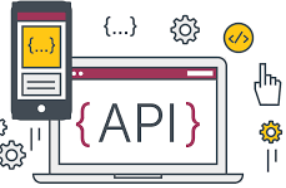

Web Application Automation Testing
We have an web
application testing automation tool. Simple, usable and reliable tool for your GUI
testing. You don't need much Technical knowledge to
use our tool.
Easy to script, easy to feed input data, easy
to manage different Test Environments. Please sign in for more information
and register to download trial version valid for one month!!!

Web Services Automation Testing
We have an Web
Services (API, SOAP, Restful) testing automation tool. Simple, usable and reliable
tool for your testing. You don't need much Technical
knowledge to use our tool.
Easy to script, easy to feed input data, easy
to manage different Test Environments. Please sign in for more information
and register to download trial version valid for one month!!!
Windows Application Automation
Testing
We have an Windows
application testing automation tool. Simple, usable and reliable tool for your testing.
You don't need much Technical knowledge to use our
tool.
Easy to script, easy to feed input data, easy
to manage different Test Environments. Please sign in for more information
and register to download trial version valid for one month!!!
Please watch us - upcoming tools for
Hybrid tool for UI+API, Terminal/Host Applications, Mobile Applications ....